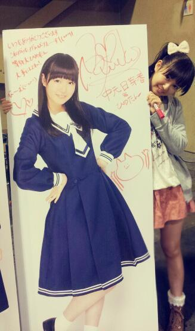

| 2013/04 27 Sat | ひめたん(*> ω<*)そ の287 |
さて(・∀・)
なんかーたーくさんの方が心配して下さってた不具合ですが
この記事が読めてたら30%は大丈夫なもんですー
...わかんないよね。それでいいのよみなさん♪
京都個握終わりましたー

カーディガンとシャツは
おにゃーのこひめきゅんちゃんたちが教えてくれた
Amavelってとこのです！
下のスカートはJILL STUART＊
春だから春らしくっ
珍しく川後さんが褒めてくれましたー
川後さんに褒められたら本物(〃ω〃)
てことで
来てくださったみなさんありがとうございました！
とっても楽しかったです(ω)♪
全握に出れなかったからもうーしっかり握手楽しみましたー

へい！
モバイル会員の方には抽選で
当たるらしいですのでねーみなさんっ
等身大ひめたんパネル( ^ω^ )
ぜひ狙ってみてくださいねー
当たった方は全力で大事にするんよー
あっ乃木どこ撮ってきたよー
生誕祭撮ってきたよー
オンエアお楽しみに('ω`)
あんのー質問返しなんだけど
僕のあたしの質問答えられてないんだけどーてお声をたまに聞くんだけど
今まで答えたものとかに関しては端折ってたりします('・_・`)
ごめんね。みなさんにひめたんのこともっと知ってほしいから
いろんな質問に答えていきたいのです...
どうしても気になったら、握手会とかで聞いてみてね＊

 ピンクよりトゲトゲが目立つって言ってくれたけど
ピンクよりトゲトゲが目立つって言ってくれたけど
かぶるならどっちがいい? (笑)(*￣∇￣)ノ
自分がかぶるなら断然ぴんく！
プレゼントは届いたかな？
この前のイベントのとかはまだ届いてないかなー
最近は会社よりもスタジオに行くことが多いので、
また会社行った時に受け取っておきますね(ω)
カレンダーは乃木坂の使ってるの？
使ってないよー箱ん中に入ってるよー
...あっ( ^ω^ )
みんなはちゃーんと使ってね♪
乃木坂に入ってなかったらなにしてた？アルバイトやってた？
どうなんだろうねー
レジのお姉さんやってみたいなーてのはずーと思ってたけど
アイドルでなくても高校生さんはお勉強とか忙しいし、
実際どうなってたかは謎。
 逃げ出したくなる程に辛い出来事に直面したら、ひめたんならどうする？
逃げ出したくなる程に辛い出来事に直面したら、ひめたんならどうする？
寝る。
超真面目に真顔で答えてますこれ。
でももし寝ても治らないくらいに辛かったら、きっと誰かに話すかな。
でももし誰にも話せないくらい辛かったら、そのときは...
時間が解決してくれるさ。結論！
自分がぬるま湯に浸かってるなぁって感じたらひめたんはどうする？
何かきっかけがないと燃えない人ですどうもっひめたんですーぺろ(〃ω〃)
そうですね。誰かに着火剤になってもらってはいかがでしょうかしら
俺は今、夢にむかっていろんなことをがんばってるんやけど、
肝心のところでなかなか前に進めんくて悩んでるんよ。
そういう時ひめたんならどうする？
いつか芽が出るまで土の中で力を蓄える...かな(ω)
華やかな表世界でなくても、見てくれてる人はちゃんといるだろうから。
フライドポテトはカリカリの細い奴と ホクホクの太い奴、どちらが好き？
ホクホクの太いやつ(^^)！
ジャガイモとサツマイモどっち派ですか？
うーんさつまいもかなー
どっちにしても、ちょっとパサパサしてるから
ちょっと手加えられてると嬉しくなりますー♪
(*´・ω・*)
コメント(198)
2013/04/27 00:06